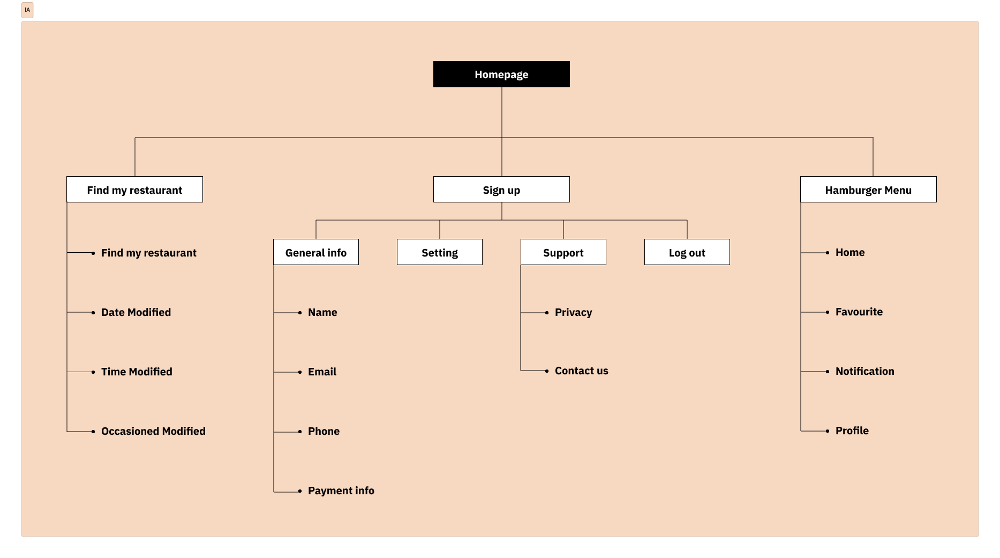

Ideate
Undertaking a holistic approach to improve the Chernka scheduling app, including a competitive audit, refining information architecture, and translating insights into tangible paper sketches.

Information architecture

Paper wireframe